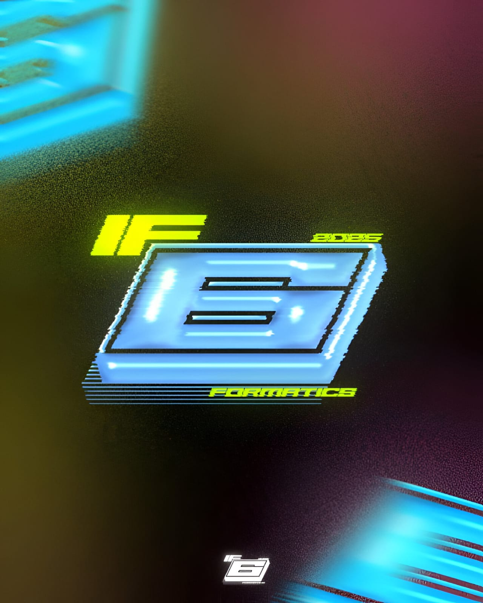
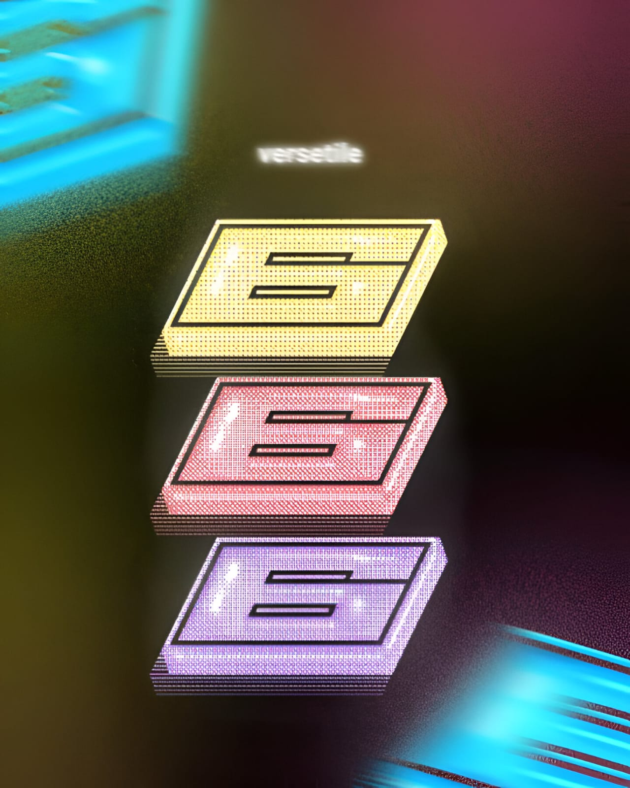

Who We Are?
SixFormatix bukan sekadar kelas, melainkan ekosistem digital di mana solidaritas dan kreativitas menyatu.
THE EMBLEM
⚡ FILOSOFI ANGKA 6
Angka 6 yang bergaya futuristik melambangkan Prodi Informatika yang akan terus ikut andil dalam berkembangnya industri zaman. Bentuk ini merepresentasikan inovasi yang dinamis.
💎 FILOSOFI WARNA BIRU
Warna biru melambangkan kepercayaan, stabilitas, profesionalisme, dan kecerdasan. Menjadi simbol ketenangan namun tajam dalam berpikir logika.
VISUAL SAMPLES

Emblem Variation I

Emblem Variation II